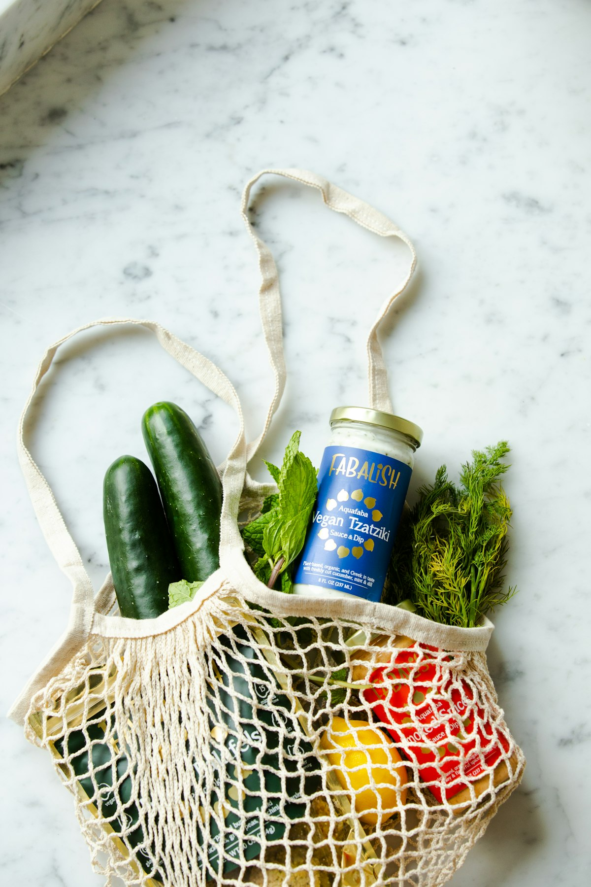

Seed Crisps
Seed Crisps
The Art of Herbal Seed Crackers and Crisps: Science, Seeds, and Crunch
A masterclass on crafting gluten-free multi-seed crisps with rosemary and sea salt, exploring seed mucilage gel binding and moisture control.
Step-by-step masterclasses on seed crisp chemistry, garden green dehydration, herbal energy formulation, and mindful tisanes.
Seed Crisps
A masterclass on crafting gluten-free multi-seed crisps with rosemary and sea salt, exploring seed mucilage gel binding and moisture control.
 Energy Clusters
Energy Clusters
Formulating dense, non-glycemic spiking snack clusters using whole Medjool dates, sprouted almonds, and culinary adaptogenic herbs.
 Garden Greens
Garden Greens
Turning garden kale, sorrel, dandelion greens, and ostrich fern fiddleheads into shatteringly crisp savory snacks with nutritional yeast.
 Herbal Dips
Herbal Dips
Crafting vibrant antioxidant-rich dips, from wild garlic chimichurri to hemp-basil green spreads, to elevate your botanical snacking board.
 Tisane Pairings
Tisane Pairings
The art of pairing savory botanical crunches with restorative, caffeine-free herbal tisanes for metabolic ease and afternoon mindfulness.

Pantry CraftEssential amber glassware, natural desiccant protocols, bulk seed sourcing, and seasonal batch-prep systems for long-lasting crispness.